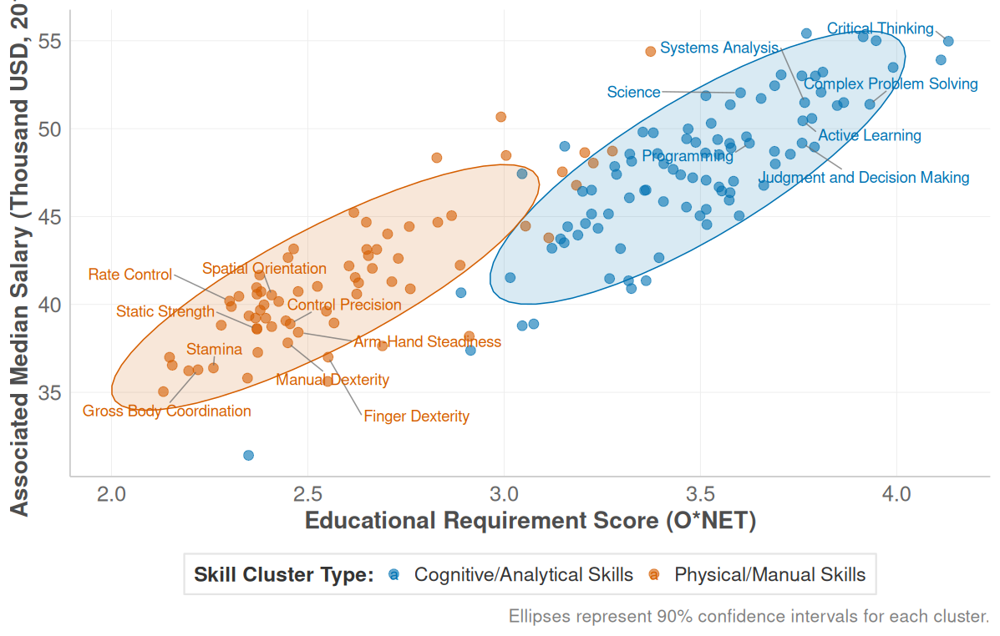
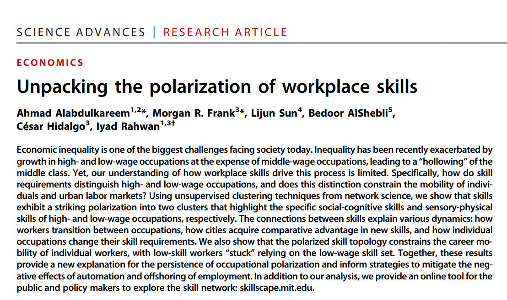
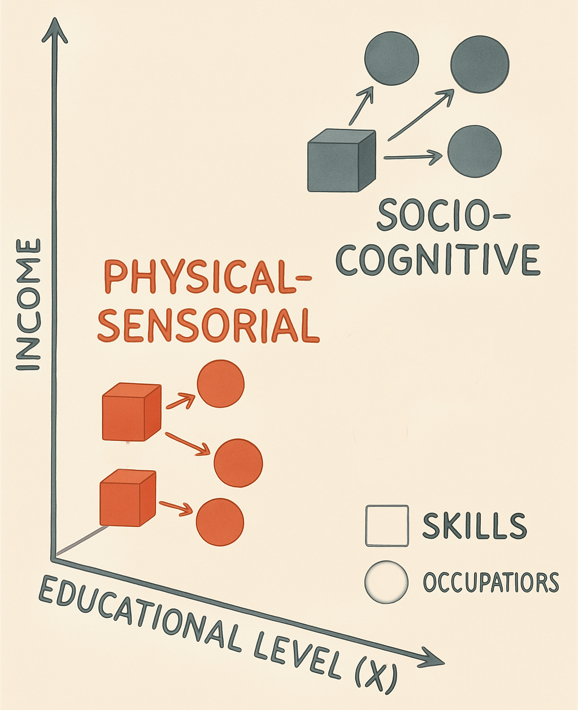
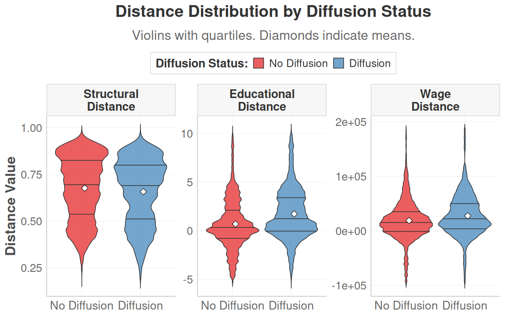
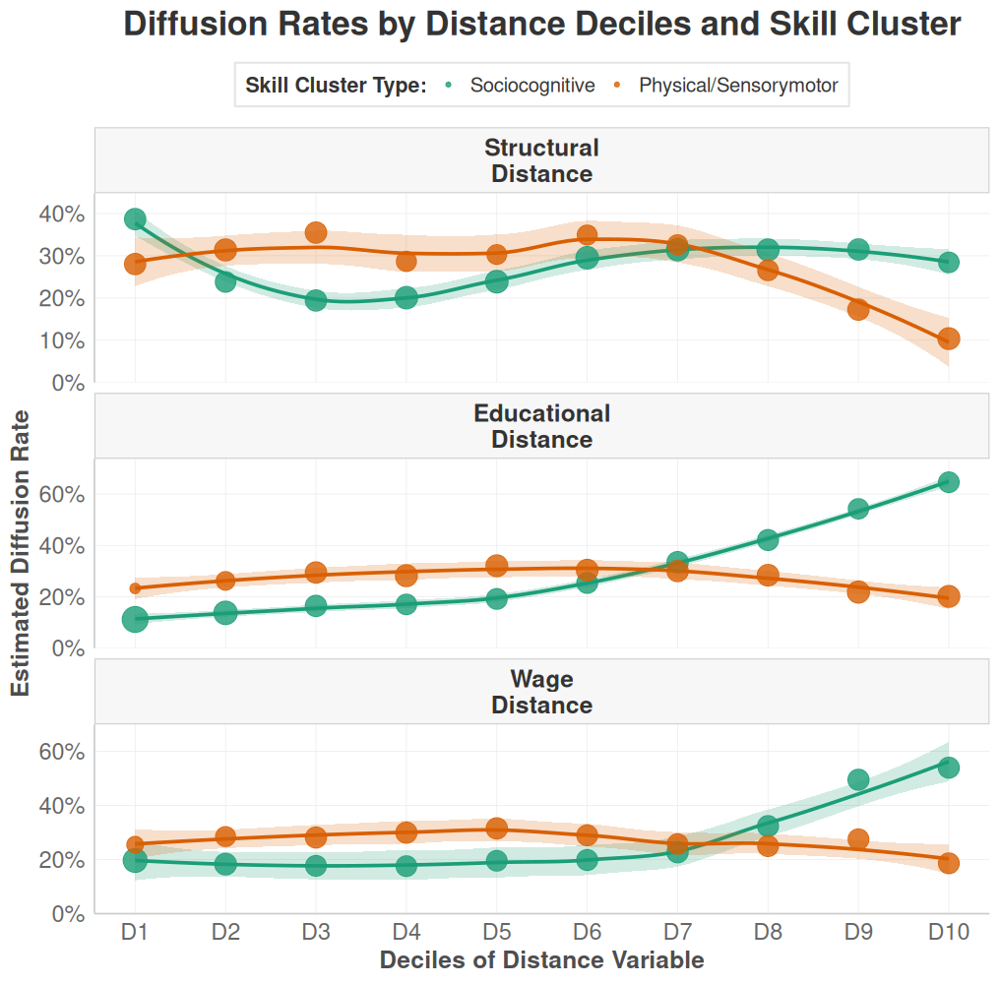
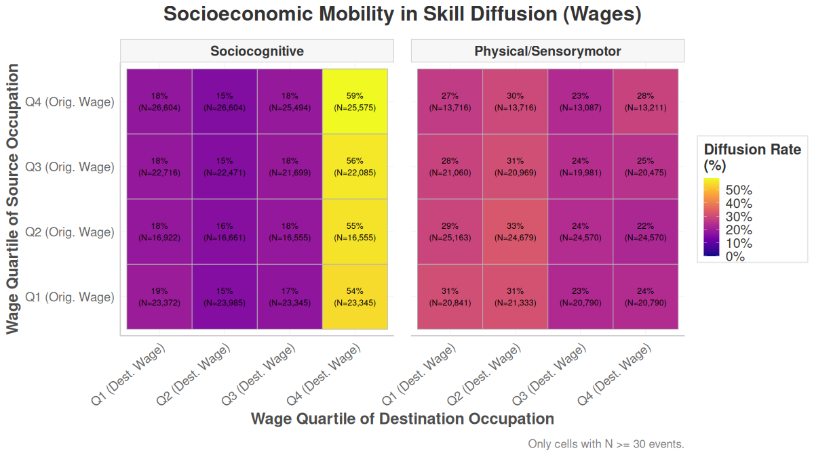
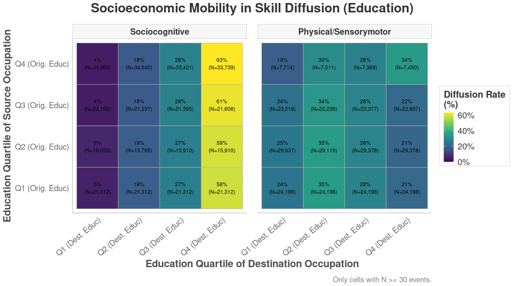
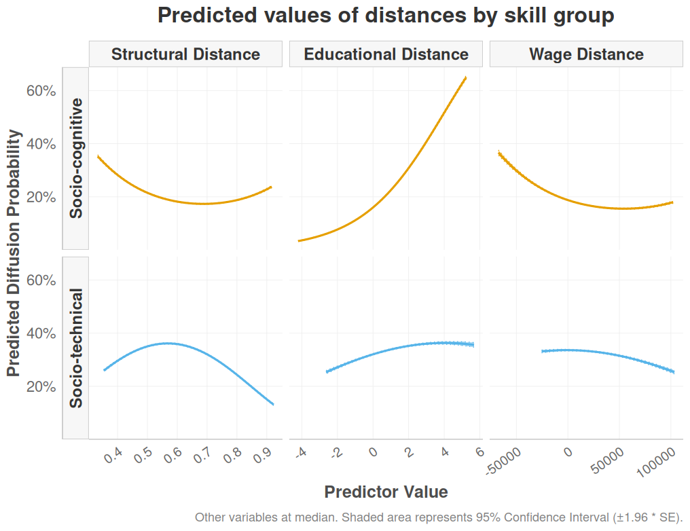

| source | target | skill_name | skill_type | diffusion | year_emission | year_adoption | data_value_source | data_value_target | source_education | source_wage | target_education | target_wage | structural_distance | education_distance | wage_distance | skill_status | total_flux_workers | prob_transition_workers |
|---|---|---|---|---|---|---|---|---|---|---|---|---|---|---|---|---|---|---|
| 11-1011.00 | 13-1111.00 | Critical Thinking | NetCluster_1 | 1 | 2015 | 2023 | 4.5 | 4.2 | 4.8 | 120000 | 4.5 | 95000 | 0.35 | -0.3 | -25000 | HighStatus | 550 | 0.18 |
| 11-1011.00 | 15-1252.00 | Critical Thinking | NetCluster_1 | 0 | 2015 | 2023 | 4.5 | 1.5 | 4.8 | 120000 | 4.7 | 110000 | 0.62 | -0.1 | -10000 | HighStatus | 230 | 0.06 |
| 11-1011.00 | 29-1141.00 | Active Listening | NetCluster_1 | 1 | 2015 | 2023 | 4.2 | 4.0 | 4.8 | 120000 | 5.0 | 85000 | 0.40 | 0.2 | -35000 | HighStatus | 710 | 0.22 |
| 13-1111.00 | 11-1011.00 | Judgment | NetCluster_1 | 0 | 2015 | 2023 | 4.0 | 3.0 | 4.5 | 95000 | 4.8 | 120000 | 0.35 | 0.3 | 25000 | MediumStatus | 480 | 0.14 |
| 13-1111.00 | 15-1252.00 | Complex Prblm Solv | NetCluster_1 | 1 | 2015 | 2023 | 3.8 | 4.1 | 4.5 | 95000 | 4.7 | 110000 | 0.28 | 0.2 | 15000 | MediumStatus | 650 | 0.19 |
| 27-1021.00 | 27-1024.00 | Arm-Hand Steadiness | NetCluster_2 | 1 | 2015 | 2023 | 4.7 | 4.5 | 3.5 | 65000 | 3.6 | 70000 | 0.15 | 0.1 | 5000 | LowStatus | 1150 | 0.33 |
| 27-1021.00 | 49-9071.00 | Arm-Hand Steadiness | NetCluster_2 | 0 | 2015 | 2023 | 4.7 | 2.0 | 3.5 | 65000 | 3.0 | 55000 | 0.75 | -0.5 | -10000 | LowStatus | 820 | 0.11 |
| 49-9071.00 | 51-2092.00 | Manual Dexterity | NetCluster_2 | 1 | 2015 | 2023 | 4.9 | 4.8 | 3.0 | 55000 | 2.8 | 52000 | 0.22 | -0.2 | -3000 | LowStatus | 1400 | 0.28 |
Skill Pathways, Work’s Worth: A Diffusion Dynamics Approach
Articulating Occupational Boundaries and Status Hierarchies through Skill Diffusion
Roberto Cantillan & Mauricio Bucca
Sociology | Pontificia Universidad Católica de Chile

I. THE PUZZLE
The Puzzle: Labor Market Dynamics & Persistent Inequality
Contemporary labor markets are characterized by unprecedented dynamism: technological advancements, globalization, and evolving industrial landscapes continually reshape the world of work (Autor 2015; Kalleberg 2011).
Despite this flux, foundational structures of occupational hierarchy and socio-economic inequality exhibit remarkable persistence and adaptive resilience (Tilly 1998).
The polarization of the labor market
- Demand for high-skill and low-skill jobs is increasing, while middle-skill jobs are declining. This is often referred to as job polarization.
- This polarization is attributed to technological change and globalization, which devalue certain skills and revalue others.

Polarization of the labor market II
Based on Alabdulkareem, et al. (2018)

Some recent references


The question
How does the interplay between skill diffusion, occupational boundaries, and skill valuations actively (re)produce and transform social stratification within dynamic occupational markets?
Supply and Demand Dynamics
Workers adapt to markets
“How do workers adapt to changing skill demands?”
- Individual career decisions
- Skill acquisition choices
- Job search strategies
- Human capital investment
Markets reshape themselves
“How do skill demands create structured mobility opportunities?”
- Occupational skill requirements
- Systematic diffusion patterns
- Structural adoption logics
- Semi-autonomous from individual choices
Demand-Side Patterns Shape Supply-Side Possibilities
If skill diffusion follows structured patterns → mobility opportunities are structurally predetermined
If different skill types have distinct diffusion logics → career destinies depend on skill type, not just skill possession
Implication: The skill diffusion process itself becomes a stratification engine that sorts workers into persistent hierarchies.
The Occupational Skill Space

We view the labor market as an “Occupational Skill Space”: A “Blau Space” where status dimensions (Education, Wages) position occupations as “niches”.
These niches are defined by skills—understood as key resources and nodes in a 2-mode network—whose diffusion dynamically (re)articulates boundaries and hierarchies.
Core Idea: From Static Structure to Dynamic Process
Previous Research: Shows WHAT the structure (e.g., polarization) looks like.
This Research: Reveals HOW boundaries are actively constructed and status is assigned. Through the lens of skill diffusion between occupations.
Central Insight:
Occupational boundaries and hierarchies aren’t just maintained—they’re dynamically (re)produced through differentiated skill adoption patterns on the demand side.
Theoretical Framework: Skill Diffusion as Boundary Work
Our research focuses on three key aspects of how skill diffusion shapes occupational stratification:
- How Skills Move: Pathways and Filters (Trajectory Channeling & Filtration)
- Job Boundaries: How They Are Shaped by Skill Movements (Boundary Articulation via Trajectories)
- Skill Value: How It Changes Based on Its “Journey” (Positional Revaluation through Trajectories)
1. How Do Skills Move? Pathways and Filters
(Trajectory Channeling & Filtration)
The movement of skills between jobs isn’t random. It follows certain “pathways” or routes, influenced by:
- Existing Job Hierarchies (Status Differentials):
- Differences in required education (Educational Gatekeeping 🎓).
- Differences in pay levels (Economic Stratification 💰). (e.g., It’s often easier for skills to move to jobs with similar requirements than to make big leaps in education or status, but the nature* of these jumps differs by skill type).*
- Job Similarity (Structural Affinity/Closure 🔒):
- How similar the overall skill profiles are between one job and another. (e.g., It’s more common for skills to move to a job that requires related skills, but some skills might be better “boundary spanners” than others).
2. Job Boundaries: How Are They Shaped by Skill Movements?
(Boundary Articulation via Trajectories)
The way skills move between jobs helps define or change the “boundaries” between different types of occupations:
- Clearer Boundaries (Sharpening):
- When dominant skill movements involve big “leaps” (e.g., requiring much more education or a significant status change for certain skill types). This can heighten credential-based barriers.
- Stronger Boundaries (Reinforcement):
- When skills primarily transfer between very similar types of jobs, maintaining occupational silos.
- Crossable Boundaries (Bridging/Permeation):
- When highly transferable skills (typically cognitive/abstract) allow occupations to adopt skills from, or diffuse skills to, quite different types of jobs, potentially transforming occupational roles.
3. Skill Value: How Does It Change Based on Its “Journey”?
(Positional Revaluation through* Trajectories)*
The value (both economic and symbolic) of a skill, and by extension the occupation adopting it, can change based on the paths it takes as it moves between jobs or as occupations adopt it:
- Pathways Matter: A skill’s association with upward or stagnant mobility trajectories influences its perceived and actual value.
- Cognitive/Sociocognitive Skills: Tend to diffuse along paths of educational and wage escalation, reinforcing their high status.
- Physical/Sensorimotor Skills: Often diffuse along paths of lateral or stagnant mobility, contributing to their lower or less dynamic valuation.
- Example: “Educational Escalation”
- If a skill type (e.g., cognitive) consistently diffuses towards occupations with higher educational requirements, this reinforces the idea that these skills are “elite” and their adoption signals an occupational upgrade.
Hypothesis
Cognitive and physical skills follow fundamentally different diffusion logics regarding educational, economic, and structural distances. These differentiated patterns actively (re)produce and potentially intensify occupational polarization and stratification.
II. METHODOLOGY
Data Source
- We will use the O*NET database, which provides detailed information on job requirements, including skills, education, and wages.
- We will also use the U.S. Census Bureau’s American Community Survey (ACS) to analyze labor market dynamics and occupational mobility.
- IPUMS-CPS data will be used to analyze the educational and occupational trajectories of individuals in the labor market.
Occupational - Skill Space
- Occupational Skill Profiles:
- Each occupation \(j\) is defined by a quantitative vector of O*NET skill importance/level values, \(onet(j,s)\), representing its reliance on each skill \(s\).
- Intuition: This vector acts as a “skill fingerprint” for each occupation, detailing its specific demands.
- Revealed Comparative Advantage (RCA):
- Purpose: To measure an occupation’s relative specialization in a skill, identifying if it uses that skill more intensively than the average occupation.
- Calculation: For skill \(s\) in occupation \(j\): \[rca(j,s) = \frac{\text{Share of skill } s \text{ in occupation } j\text{'s total skill needs}}{\text{Share of skill } s \text{ in the entire system's total skill needs}}\] Where:
- Numerator: \((onet(j,s) / \sum_{s' \in S} onet(j,s'))\)
- Denominator: \((\sum_{j' \in J} onet(j',s) / \sum_{j' \in J, s'' \in S} onet(j',s''))\)
Occupational - Skill Space II
- Interpretation: * \(rca(j,s) > 1\): Occupation \(j\) has a comparative advantage in skill \(s\); the skill is “overexpressed” or “effectively used” (denoted \(e(j,s)=1\)). This highlights skills that distinctively characterize the occupation. * \(rca(j,s) \le 1\): The skill is not a distinctive specialty for occupation \(j\) relative to the average.
- Benefit: Normalizes raw O*NET scores to filter out ubiquitous skills and spotlight an occupation’s key distinguishing skill requirements.
Skill Networks
- Clusters (
skill_type):- Skill-Skill Complementarity Network (Skillscape): A network is constructed where nodes are skills. The weight of an edge between two skills, \(\theta(s,s')\), represents their complementarity. This is calculated as the minimum of the conditional probabilities that both skills are effectively used together in the same occupations: \[\theta(s,s') = \frac{\sum_{j \in J} e(j,s) \cdot e(j,s')}{max(\sum_{j \in J} e(j,s), \sum_{j \in J} e(j,s'))}\] This captures how skills support each other, either by boosting productivity or through ease of simultaneous acquisition.
- Louvain Community Detection: This unsupervised algorithm is applied to the skill complementarity network to identify clusters of skills (skill types). It works by greedily optimizing modularity, comparing the density of connections within a community to that between communities, without pre-specifying the number of clusters.
Identifying Diffusion Events (diffusion = 1)
Core Idea: A skill diffuses from an occupation already using it (source) to an occupation that newly adopts it (target) between a
start_yearandend_year.Process:
- Effective Skill Use: Determine if a skill is “effectively used” in each occupation for both start and end years (Revealed Comparative Advantage - RCA > 1).
- Identify Sources: List occupations effectively using the skill in the
start_year. - Identify New Adopters (Targets): List occupations effectively using the skill in the
end_yearBUT NOT in thestart_year. - Positive Event: For a given skill, a positive diffusion event (
diffusion = 1) is created for every pair of (source occupation, new adopter target occupation).
Constructing Non-Diffusion Events (diffusion = 0)
Core Idea: A skill does not diffuse from a source occupation to a target occupation if the target fails to effectively use the skill by the
end_year.Process:
- Effective Skill Use & Sources: Same as for positive events (RCA > 1 in
start_yearfor sources). - Identify Potential Non-Adopters (Targets): List all relevant occupations that are NOT effectively using the skill in the
end_year. - Negative Event: For a given skill, a negative diffusion event (
diffusion = 0) is created for every pair of (source occupation, potential non-adopter target occupation). - Exhaustive Generation: The script generates all such possible negative (non-diffusion) events.
- Effective Skill Use & Sources: Same as for positive events (RCA > 1 in
Data struture
Model
III. Results
Descriptives I

Descriptives II
Sociocognitive Skills (Green): Exhibit remarkable resilience and ‘jump’ capability. They maintain diffusion across structural distances and significantly increase when crossing larger educational and wage distances. For them, distance is an opportunity.
Physical/Sensorymotor Skills (Orange): Are highly sensitive and constrained by distance. Their diffusion plummets with structural distance and stagnates or falls across educational and wage distances. For them, distance is a barrier.

Descriptives III

Descriptives IV

Descriptives V
Two Divergent Trajectories
- Sociocognitive Skills (“The Escalator”): Overwhelmingly flow upwards into the top socioeconomic quartile (Q4) for wages and education, regardless of their starting point. They act as a “gravitational pull” to elite occupations.
- Physical/Sensorymotor Skills (“The Lateral Drift”): Primarily circulate sideways within lower/middle quartiles (Q1-Q3), facing a “glass ceiling” that blocks significant upward mobility into Q4.
Mechanisms at Play
These flows illustrate “opportunity hoarding” (Social Closure), where cognitive skills act as credentials for elite access.
We observe a “skill gentrification” effect, as cognitive skills elevate occupational requirements, potentially displacing physical skills.
Consequences & Key Takeaway
Polarization Ratchet: Skill diffusion isn’t just a symptom of polarization; its directionality actively deepens it.
Skill Type, Not Origin, Dictates Destination: Cognitive skills from any origin are “pulled” to Q4, while physical skills remain largely in lateral networks.
Model diffusion

Model diffusion II
Sociocognitive Skills (Orange) = “Upward Educational & Moderate Structural Association”:
- Diffusion probability increases sharply with positive educational distances (target > source).
- The relationship with structural distance is U-shaped, with the highest probability observed at moderate levels of difference.
- Diffusion shows a weak or slightly negative association with large positive wage distances.
- Observed Pattern: Diffusion is most probable under conditions of upward educational shifts and moderate structural change, largely independent of significant wage increases.
Socio-technical Skills (Blue) = “Structural Proximity & Educational Stasis”:
- Diffusion probability decreases consistently as structural distance grows.
- The relationship with educational distance is largely flat, indicating limited diffusion across educational divides.
- The highest probability occurs at zero or slightly negative wage distances, decreasing for larger positive distances.
- Observed Pattern: Diffusion is most probable under conditions of high structural similarity and is associated with lateral or downward wage mobility, showing strong educational constraints.
IV. Discussion
Key Findings
Skill diffusion is not random; it exhibits asymmetric patterns strongly linked to structural conditions and skill type.
Higher probabilities for cognitive skill diffusion are associated with educational increases, while higher probabilities for technical skill diffusion depend heavily on structural similarity.
These differing structural propensities result in distinct mobility pathways, which can create ‘mobility traps’ and reinforce labor market inequality.
So What?
References
Autor, David H. 2015. Why are there still so many jobs? The history and future of workplace automation. Journal of Economic Perspectives 29(3) 3–30.
Kalleberg, Arne L. 2011. Good jobs, bad jobs: The rise of polarized and precarious employment systems in the united states, 1970s-2000s. Russell Sage Foundation.
Tilly, Charles 1998. Durable inequality. University of California Press.
Cantillan & Bucca | Skill Pathways, Work’s Worth: A Diffusion Dynamics Approach | 2025